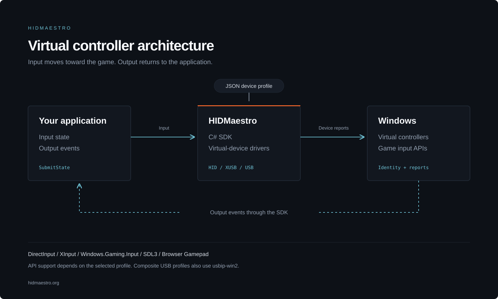

HIDMaestro
Press
& media.
Brand assets and product information for stories about HIDMaestro.
Download press kitArchitecture, logos & fact sheetZIP · 1.6 MB
using var ctx = new HMContext();
ctx.LoadDefaultProfiles();
ctx.InstallDriver();
using var ctrl = ctx.CreateController(
ctx.GetProfile("xbox-360-wired")!);
ctrl.SubmitState(new HMGamepadState {
Buttons = HMButton.A
});HIDMaestro 1.9.0September 20, 2026
Release notesThe technology
Product graphic

Architecture overview
1600 × 960 SVG
{kind=link}
{kind=link}
The project
About HIDMaestro
HIDMaestro is a free, open-source SDK for creating virtual game controllers on Windows. Applications use its C# API and JSON device profiles to define controller identity, submit input, and receive output such as rumble and force feedback. PadForge uses HIDMaestro for virtual controller output. HIDMaestro is available under the MIT license, including for commercial use.
Built on the UMDF2 approach pioneered by Nefarius in DsHidMini. Composite USB profiles use usbip-win2 by Vadym Hrynchyshyn. Third-party notices.